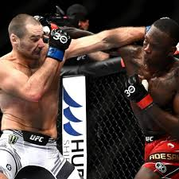
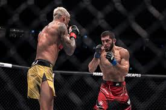

UFC
La Ultimate Fighting Championship és una organització nord-americana de combats d'arts marcials mixtes amb seu Las Vegas, Nevada. Actualment és una de les majors organitzacions de MMA de tot el món. És propietat i està operada per Zuffa, LLC, una subsidiària d'Endeavor Group Holdings.
Els combats de Vale Tudo són originaris de Brasil, on des de principis del segle XX se celebraven en rings de Boxa o en acadèmies d'arts marcials, freqüentment com reptes entre diferents escoles. No obstant això el seu major índex de popularitat va venir amb la família Gracie, creadors del Gracie Jiu Jitsu, que reptaven a qualsevol lluitador de qualsevol estil a enfrontar-se a ells sota aquestes gairebé inexistents regles. Des del seu fundador Hélio Gracie fins a la llarga llista de lluitadors de la seva família, el Gracie Jiu Jitsu va guanyar gairebé tots els seus combats amb un mètode revolucionari: derrocar als seus oponents i obligar-los a rendir-se amb claus de braç o escanyaments.
 